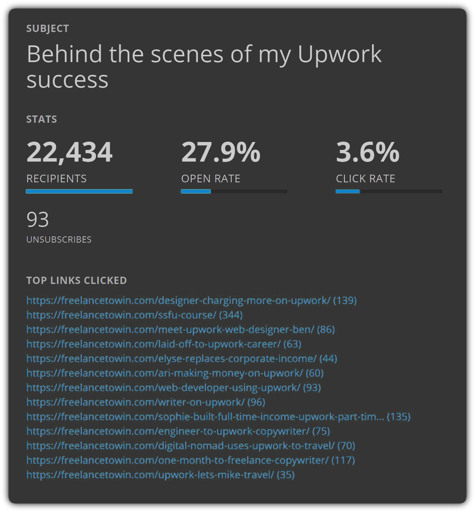

"How to write mouthwatering case studies that grow clients’ businesses"
Welcome to Module 5. This week, you’ll learn:
- My exact process for writing case studies that sell (even if you’ve never written a story)
- The #1 factor that can make or break a case study
- The psychology behind case studies that convert
- How to get tons of great source material that makes case study writing 10x easier
- The key to striking the perfect tone in your case study copy
- How to quickly create a framework that lets you breeze through your first draft
- The secret to writing an attention-grabbing title that lures readers in
Reading a case study can be exciting and up-lifting…or it can make your eyes glaze over with boredom.
In this module, you’ll learn how to take virtually any story (no matter how dry or mundane) and turn it into a case study people relate to, enjoy, get inspired by, and actually LOOK FORWARD to reading.
And, just as importantly, you’ll see the exact steps I use to create case studies that SELL.
Case studies are incredibly important to clients because they provide LIVING PROOF that their business has value and offers its customers REAL RESULTS.
Think about it: Anyone can write a bunch of information on their website or blog. But a case study is a living, breathing success story that shows off real results they’ve helped someone achieve -- whether they’re a financial planner, welding company, a toy manufacturer, or anything else.
And it’s not enough to have just one or two case studies lying around. Clients need LOTS of them.
Take FTW as an example… We’re constantly producing new case studies, and we’re happy to pay hundreds of dollars for each one.
We’ve been using case studies to sell our flagship course, Secrets Of A Six-Figure Upworker, with amazing results. We simply email people links to them, and watch the magic happen.

Even if you’re not planning to be a full time case study copywriter, case studies also make a great upsell. For example, let’s say you’re interviewing a client’s customers as part of your research -- why not suggest doing a case study on them while you’re at it?
The secret sauce behind amazing case studies
"Case study" is a fancy term businesses use when they mean "story."
Unless you work for Goldman Sachs, a great case study shouldn’t sound like a corporate report with graphs and charts to present at a stakeholder’s meeting.
When you read a biography of Steve Jobs or Tiger Woods, you’re really reading a "case study" of how they overcame struggles, defeats, failures, and adversity to beat the odds and achieve wild success.
I’ll show you how anyone can turn out engaging and entertaining case studies every single time -- even if you’ve never written a story before.
Before we get into the how-to, let’s look at the psychology behind every great case study. Watch the video below to learn more:
Constructing your case study’s framework
A case study is a real story about a real person, so naturally, each one will have its own twists and turns.
At the same time, every great case study has the same core structure. Keeping it in mind will help you immensely when you sit down to write. Let’s examine in in detail now…
Act I: The Challenge
Take a look at this excerpt of the "challenge" portion of an FTW case study:
Act II: The Turning Point
This is where the hero finally becomes fed up enough to draw a line in the sand and seek a solution.
Regardless of exactly how things play out, this is the point of the story where the hero becomes committed to doing whatever it takes to try to overcome the challenges and make their life better.
Of course, this is also the part of the story where you’ll introduce your client and their product or service, since that’s ultimately the thing that helps the hero win. Here’s an example of what the "turning point" can look like:

The hero hasn’t fully "won" just yet, but you can see things are starting to move in the right direction.
Act III: The Victory
This is the conclusion of the story. The hero has done the hard work of overcoming the challenge, with the help of your client’s product or service. Their life has improved in some measurable way and this is the place to celebrate it.
Your job is to tell a story that weaves all of this together.
Let’s zoom out and see what this looks like from a 20,000-foot view using a case study we wrote about Daniel Throssell, a former engineer who quit his job to become a full time copywriter. You can see the entire story here with all its twists and turns, but notice how it follows the same overall structure I’ve just described when we go over it "at a glance"…
Awesome vs. dull case studies: The #1 determining factor
Case studies are completely different from other forms of copywriting, because you’re telling a story that’s biographical.
Your job isn’t to come up with anything original, or make anything up from thin air. It’s to tell the existing story in a way that’s as interesting and exciting as possible.
Yes, you’re going to shape, frame, and mold the facts into a fun and exhilarating narrative, like a sushi chef bends, twists, and juxtaposes fish and rice and vegetables into edible works of art.
A sushi chef’s creation can only be as good as their raw materials. Even the best sushi chef on earth can’t do much without fresh, flavorful ingredients.
Similarly, even the best writer doesn’t stand a chance of writing an amazing case study without first getting great INPUT from the story’s hero.
Do you think Walter Isaacson’s biography of Steve Jobs would have been anywhere near as good if the two hadn’t talked extensively? No way.
Of course, you’re only writing a short case study -- not the Encyclopedia Britannica. You don’t need to meet the hero in person, or talk for hours on end.
Ideally, though, you’ll at least get to hear the story directly from their viewpoint. You can do this by offering to interview them yourself (and charging extra for the time it takes) -- or, the client can interview them for you and give you a transcript to read.
Either way, the key to getting amazing info is to ask strategic questions that bring out juicy, scintillating insights and emotions.
This can be a delicate balance.
Have you ever noticed that some TV interviewers seem to have a knack for getting people to reveal their deepest emotions, while others get answers that are stilted and dry?
If your questions are too specific, the subject will give you short answers that won’t make for juicy material.
Examples of questions that are too specific:
- Before you discovered our course, how did you earn a living?
- Now that you’ve achieved success, do you have more free time?
On the other hand, if your questions are too broad, you’ll get sweepingly generalized answers that are vague and unhelpful.
Examples of questions that are too broad:
- When you started to earn more money, what did you do?
- Tell me about your experiences over the past year.
Asking just the right questions gets you to that sweet spot -- answers that are specific, emotional, and relatable to readers.
Here are some examples of questions we use to get people to open up and give us great information when we write FTW case studies (you can apply these to anything you write about):
Do you see what we’re doing here? Far from just saying, "Tell us your story," these questions allow people to open up and give us GREAT answers that are juicy, entertaining, and emotional.
This is no accident. We carefully designed these questions to help people give us their best answers. We even threw in some fun questions to lighten up the mood and keep our hero on their toes.
THAT is how you get the type of intel that turns ordinary stories into amazing case studies that clients and readers LOVE.
At this point, you may be thinking, "Danny, I have all this information from the hero… Now what should I write?"
I’m going to devote the rest of this module to answering that question. Start by watching the video below:
Choosing the perfect quotes
It’s time to put on your detective hat and sniff out the juiciest and most powerful quotes from your interview.
The trick is to look for quotes that are:
- EMOTIONAL
- SPECIFIC
- Or DRAMATIC
Let’s go over some real examples:
Do you notice how rich and powerful these quotes are? They’re detailed, specific, emotional, and dramatic. Quotes like these are your "prime cuts."
At this point, you’re not looking to make nitty gritty decisions about exactly which ones to use and which ones to discard. You’re just looking to eliminate the ones that have zero potential. So if you’re not sure about whether or not you’ll use a particular quote, just keep it for now.
Over time, you’ll develop a sixth-sense for which quotes to use, and which ones to instantly discard.
Forming the story’s "skeleton"
Now that you have your quotes picked out, the next step is to start organizing them into the right order.
This will give your story a "skeleton" to build on.
You can organize all of your quotes into chronological order using a simple template like this one:
Here’s a real example of what this looks like in action, using real quotes I pulled from an actual interview:
Don’t worry about putting each quote into the "perfect" spot just yet. The goal here isn’t perfection. It’s just to move the process forward, one step at a time. Just put each quote in the section you think it belongs, and we’ll figure the rest out later.
Sometimes, you might find more than one quote that essentially says the same thing (or something similar). When that happens, you can either delete one, or merge them together, like this:
Finally, make sure each quote covers ONE main idea. It’s OK if a quote is several sentences long…but if it’s about more than one single topic, you should break it into 2 separate quotes -- like this:
At this point, you should be able to read through all the quotes and start to see a rough story taking shape.
Yes, there’s still a ways to go, but you should at least be able to get the gist of things. You may even begin to see some drama, twists, and turns unfolding.
Throwing narration into the mixing bowl
Now that you have the bones of your story in place, it’s time to add your narration.
As a general rule, you should write 1 or 2 sentences (MAX) of narration for each quote.
Remember, the hero’s quotes are going to be the main driver of your story, so you don’t need to write anything brilliant.
In fact, you don’t even want to sound brilliant! THEY are the hero of the story -- your job is to help them shine.
Here’s an example of what this looks like:
Key guidelines for writing great narration to go with your hero’s quotes:
- Whenever possible, use "contrast" and "visual words" to highlight the story’s drama
- Be sure to always paint your hero in a positive light -- remember, this is your client’s customer! (This can be difficult during the "challenge" portion of the story, so watch out)
- Use short, simple sentences
Examples:
- "With the clock ticking, Nicholas frantically looked for a way to earn more and support the digital nomad lifestyle he loved."
- "Though Carrol was a great executive assistant, the long commute and mind-numbing work made her job feel like a chore."
- "He managed to turn his dream into a reality -- but making ends meet was more of a struggle than he’d thought it would be."
- "Tsavo was conflicted about his future. Despite being on track for a lucrative career in law, deep down he knew he wanted something different."
Creating "mini-chapters" that keep readers engaged and entertained
At this point, your case study should contain groups of narration + quotes, and be organized into 3 main sections, like this:
Next, we’ll use sub-headlines to break each section up into "mini-chapters" that will make the story more exciting and easier to read.
Even though there are 3 main parts to your story, in reality you’ll find that most case studies are a bit more complicated than that.
For example, remember Daniel’s story from earlier in this module? He was the engineer whose job was making his life miserable, until he stumbled upon Freelance To Win. But it wasn’t all roses from that point on! Even after he scored his first freelance copywriting client, he still had to face a potentially crippling bout of Impostor Syndrome.
Giving each of these twists and turns its own "mini-chapter" in your story keeps things fresh and interesting. And using subheadlines to "rope off" each new section makes the copy easier to consume.
Sometimes, recognizing and separating where to draw the line between two mini-chapters can be pretty subtle. Keep in mind this is art, not science. Make a decision and run with it, and don’t sweat it after that. (As a general rule, try to use one subhead every 4-8 paragraphs.)
Writing an attention-grabbing title that lures readers in
Your title is one of the most important parts of your case study. There’s a reason I save this step for last -- once your story is fleshed out, you can write a title that’s 10x better, with less time and effort.
For example, when we initially wrote Kaleigh’s case study, we thought the title might be something like, "Meet the newbie freelance copywriter who’s crushing it on Upwork". But after writing it, we realized that Kaleigh’s frustrating job search was much more unique and exciting -- so we used that as the title instead.
Something similar happened when we wrote Nenad’s case study. Originally we thought about highlighting the fact that Nenad quit his job and became a full time freelancer. But once the story was fleshed out on the screen, we realized the most dramatic and compelling angle was how Nenad went from charging $20/hr -- to $130/hr!
When trying to figure out which angle to focus on, one of the questions we ask ourselves is, "How can we make this appeal to the widest possible audience -- without being so vanilla that it ends up appealing to no one?"
For example, when we wrote about Sophie, we loved the fact that she succeeded at freelancing while homeschooling 5 young kids! Not everyone can relate to being a mom -- or even a parent -- but just about all of us can relate to some sort of challenge that makes success particularly daunting.
If the right angle isn’t obvious, do another quick read-through of the story -- the "answer" is often hiding in plain sight. One helpful way to think about this is that you can play up elements from any one of the 3 main "acts" of your story. Here are some ideas you can use, along with specific examples from my own case study trove:
Try to come up with a few different titles, at least initially. You might be surprised at how much easier it is to find a pearl in a cluster of oysters. And it’s always a good idea to send the client 1-2 alternate titles, in addition to your main pick.